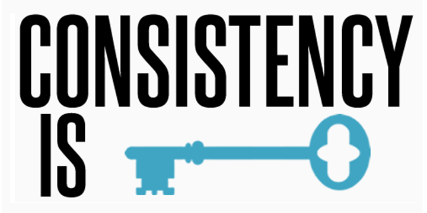
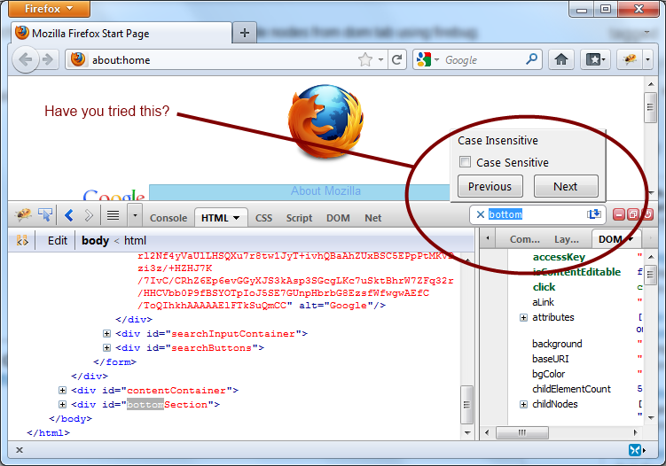

- Readability
-
When wanting to debug your website for the errors that it might contain,
it is in the best interest of the programmer to organize the CSS so that someone
else can debug the code if needed. Even though it's all based upon the programmer
if they want to either of these styles listed below:
All in one line:
.someDiv { background: blue; padding: 1em; border: 1px solid green; }
Each line with own style:
.someDiv {
background: blue;
padding: 1em;
border: 1px solid green;
}
- Consistancy
-
Keep all the CSS used consistant throughout the CSS stylesheet. This is to mainly
keep the code readable but at the same time when you develop the "sub-language"
of CSS to name things, it is a lot easier to just organize everything consistantly.

- Organization
-
What most people recommend for organizing the CSS is to either do a top-down design
or organize everything by categories to make it easier to find things that relate to it.
But it is a better idea of top-down, because it works more like a heiarchy of parents
and the child styles.
Some people organize stylesheets like this:
- Generic classes (body, a, p, h1, etc.)
- #header
- #nav-menu
- #main-content
While others do this:
/******* main content *********/
Styles here
/******* additional content *********/
Styles here
- Combination of elements
-
It's better to use what you already have made then make the same exact code to do the
same exact task. It seems redundant that some people make the same exact code again
where you have already made it somewhere else in the styles. That's on why it's
a lot better to reuse the made code.
An example to share characteristics on text
p, h1, h6 { font-weight: bold; color: blue; }
- Firebug or Chrome
-
Firebug-A Firefox plugin that provides debugging for javascript and pinpoints
elements that are interfering with paddings and margins. Similarly, Chrome
naturally already has the features of showing what the padding
and margin sizes are and the amount of pixels each of these take up.
To get Firebug, get Firefox Click here

- Create HTML then CSS
-
When making a really good website, it is better to make the bulk of the site
before doing smaller edits to the site so then you can see what the actual output is
and all that you have created in that website. If you were doing both making the
bulk and the CSS at the same time, errors can naturally happen and it can cause a lot
of problems with the website in the long run.

- Validation
-
Many people think that validating your CSS is just because, but it is more
that that, it is to mainly see if there is a simple error that can make your
website not want to work. At the same time, it is to debug any problems that
are not seen in the site at first sight. So it is very important that you
validate your CSS code to make sure that there are no errors when running
the website. You can also validate CSS code in the same way. A very useful
website that can help in CSS validation is
https://jigsaw.w3.org/css-validator/
- Using classes
-
Classes can be extremely useful to reuse CSS code that you have made at some other point
you can resuse the code. For many websites, more than one classes can be used at once and
that is because each one of these classes can have their own syles applied to them. Thus it
it very useful to use classes to reuse styles that you have previously made.
An example of multiple classes are:
<div class="class1 class2"></div>
- Use shorthand CSS
-
When coding CSS, it is better for organization and for simplicity and that is through shrinking
your code with combining styles. A few elements where this can work with is with padding,
margins, border, font etc. Through compressing and simplifying the styles into one line,
it makes it easier to debug the code because it is all in one place, and you can see on
what this will affect, where when not doing that, it's harder to know on what it affects.
Unsimplified:
#class {
margin-left: 10px;
margin-top: 7px;
margin-right: 12px;
}
Shorthand:
#class {
margin: 7px 12px 0px 10px; // top, right, bottom, and left values, respectively.
}